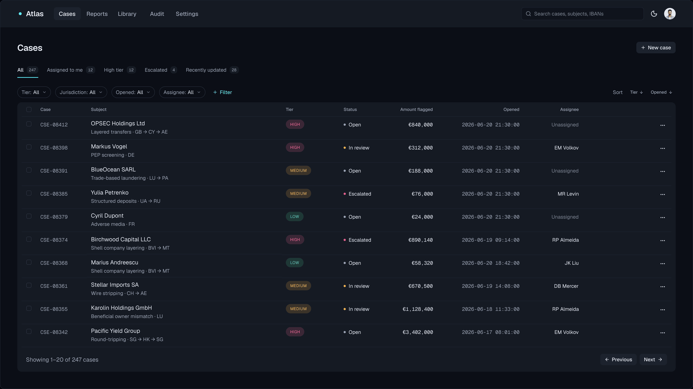
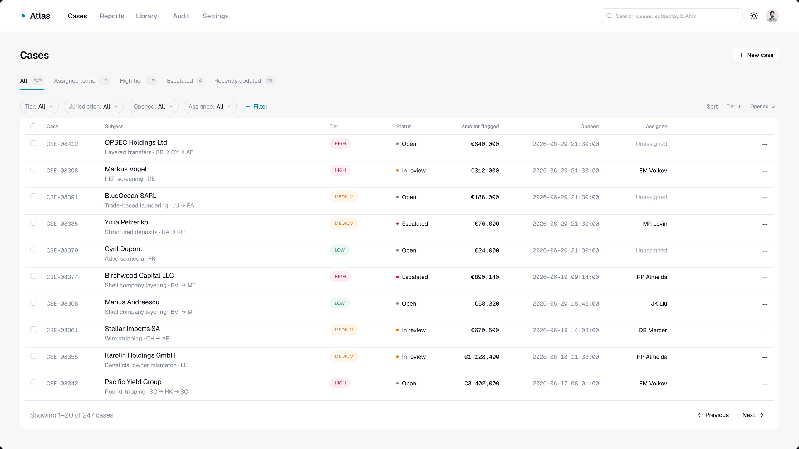
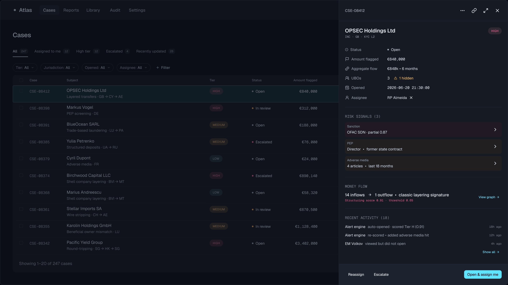
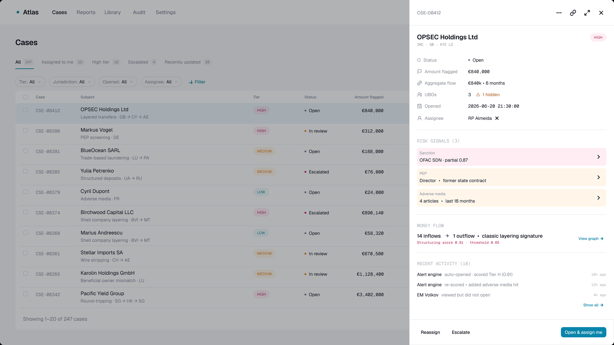
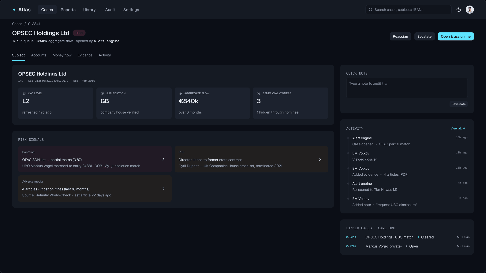
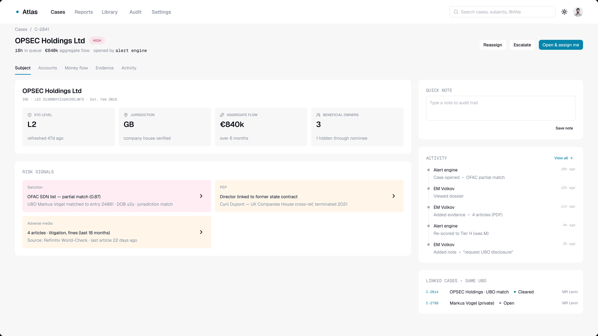

Atlas
A workspace for investigating suspicious financial transactionsРабочее пространство для расследования подозрительных финансовых операций

About the projectО проекте
A bank runs financial monitoring: the system flags suspicious transactions, and every one of them has to be worked through — who the subject is, where the money came from, whether there are grounds for a report to the regulator. That work sits with the AML compliance teamБанк ведёт финансовый мониторинг: система помечает подозрительные операции, и каждую нужно разобрать — понять, что за субъект, откуда деньги, есть ли основания для отчёта регулятору. Этим занимается отдел AML-комплаенса
Atlas is a single case workspace: the queue, the subject dossier, money flows and the decision history in one placeAtlas — единое пространство кейса: очередь, досье субъекта, денежные потоки и история решений в одном месте
- AudienceАудитория продукта
- The bank's AML analysts, from junior to seniorAML-аналитики банка, от джуниоров до сеньоров
- How it wasКак было
- Under NDA I can't show the previous interface. The investigation ran in a table of long rows and a dozen columns, which served more as a work log than as a real space to investigate in. Context had to be gathered from adjacent systems, and priority checked with the team leadПод NDA я не могу показать прежний интерфейс. Расследование велось в таблице с длинными строками и десятком колонок, которая служила скорее журналом работы, чем полноценным пространством для расследования. Контекст приходилось собирать из смежных систем, а приоритет уточнять у руководителя
- GoalЦель
- Bring the investigation together in one place and make a case's priority visible, so the analyst spends time on the decision rather than on the searchСобрать расследование в одном месте и сделать приоритет кейса видимым, чтобы аналитик тратил время на решение, а не на поиск информации
My roleМоя роль
I led the product redesign end to end — from research to handoffЯ провела редизайн продукта целиком — от исследования до передачи в разработку
Context & problemКонтекст и проблема
Financial-monitoring specialists work through hundreds of cases every day. Every decision needs context: who the subject is, where the money came from, what has already happened on the caseСпециалисты по финансовому мониторингу ежедневно разбирают сотни кейсов. Для решения по каждому нужен контекст: что за субъект, откуда деньги, что уже происходило по кейсу
"I open the queue and I can't tell which case to take first. I have to work it out myself"«Я открываю очередь и не понимаю, какой кейс брать первым. Приходится самому разбираться»
Senior AML analystSenior AML-аналитикResearchИсследование
InterviewsИнтервью
I ran 12 interviews with AML analysts, from junior to senior. What came out of them:Я провела 12 интервью с AML-аналитиками — от джуниоров до сеньоров. Что выяснилось:
Priority doesn't show in the queue: analysts take the top row, the largest amount, or go and ask the team leadВ очереди не виден приоритет: берут первый сверху, крупную сумму или идут уточнять к руководителю
No dedicated space for the investigationНет отдельного пространства для расследования
Knowledge is handed between analysts manuallyПередача знаний между аналитиками происходит вручную
A decision can't be defended once time has passedРешение невозможно защитить спустя время
Diary studyДневниковое исследование
The same 12 analysts spent two weeks logging how many cases they worked through, which systems they used, and where their time went. What the logs showed:Те же 12 аналитиков две недели фиксировали, сколько кейсов разобрали, какими системами пользовались и на что тратили время. Что показали записи:
5–6 tools per case5–6 инструментов на кейс
~40% of the time goes to routine~40% времени — рутина
of that, ~25% is reassembling context between systemsиз них ~25% — пересборка контекста между системами
Competitive analysis — five productsАнализ конкурентов — пять продуктов
I benchmarked five products in the financial-compliance space — Chainalysis Reactor, Quantexa, TRM Labs Forensics, Hawk:AI, and Feedzai — against twelve criteria. They fell into two structural camps:Я провела бенчмаркинг 5 продуктов в сфере финансового комплаенса — Chainalysis Reactor, Quantexa, TRM Labs Forensics, Hawk:AI и Feedzai — по двенадцати критериям. Продукты распались на два структурных лагеря:
- Investigation-grade tools (Reactor, Quantexa, TRM Labs) bring all investigation material together — alerts, entities, addresses, and other linked objects. But the case mostly serves to store and structure information, not to organise the investigation itself.Investigation-grade инструменты (Reactor, Quantexa, TRM Labs) объединяют все материалы расследования — алерты, сущности, адреса и другие связанные объекты. Но роль кейса в основном сводится к хранению и структурированию информации, а не к организации самого процесса расследования.
- Alert-centric tools (Hawk:AI, Feedzai) work with individual alerts that the analyst reviews and closes independently of one another.Alert-centric инструменты (Hawk:AI, Feedzai) работают с отдельными алертами, которые аналитик рассматривает и закрывает независимо от других.
Key insightsКлючевые инсайты
01
Priority reads neither to a new hire nor to an experienced analyst: the queue holds no data to lean onПриоритет не считывается ни новичком, ни опытным аналитиком: в очереди нет данных, на которые можно опереться
Interviews + diary studyИнтервью + дневниковое исследование
02
There is no workplace for the investigation: it all happens in a table, and the analyst gathers the context by hand, from several systems, every timeРабочего места для расследования не существует: вся работа идёт в таблице, а контекст аналитик каждый раз собирает по нескольким системам вручную
Diary study + competitive analysisДневник + анализ конкурентов
03
The course of an investigation doesn't stay in the system: to reconstruct the logic of a decision you have to find the case in the table, take its number, and go searching through reports and adjacent servicesХод расследования не остаётся в системе: чтобы восстановить логику решения, нужно найти кейс в таблице, взять его номер и идти искать по отчётам и смежным сервисам
Interviews + competitive analysisИнтервью + анализ конкурентов
Information architectureИнформационная архитектура
An open card sort (8 participants) showed that most analysts group information the same way. These five categories became the structure of the case dossier:Открытая карточная сортировка (8 участников) показала, что большинство аналитиков группируют информацию одинаково. Эти пять категорий легли в основу структуры досье кейса:
- Subject — profile, KYC, beneficial owners, jurisdiction.Субъект — профиль, KYC, бенефициары, юрисдикция.
- Accounts — bank accounts, types and balances.Счета — банковские счета, типы и балансы.
- Money flow — transactions, suspicious chains, risk scoring.Денежные потоки — транзакции, подозрительные цепочки, оценка риска.
- Evidence — documents, screenshots and other investigation material.Доказательства — документы, скриншоты и другие материалы расследования.
- Activity — the investigation history and decisions madeАктивность — история расследования и принятые решения
StrategyСтратегия
Jobs to Be Done
The research pointed to one shared job: understand every risk on a case and close it so that the decision can be justified in a later review. The seven job stories are ways of doing thatИз исследования сложилась одна общая задача: понять все риски по кейсу и закрыть его так, чтобы решение можно было обосновать при последующей проверке. Семь job stories — способы её решить
In the first iterationВ первой итерации
JS1 · TriageПриоритизация
When I open the queue, I want to see which cases need attention first, so I can take on the highest-priority workКогда я открываю очередь, я хочу видеть, какие кейсы требуют внимания в первую очередь, чтобы взяться за самое приоритетное
JS2 · InvestigateРасследование
When I start working through a case, I want to see the subject, accounts, money flows, evidence and prior decisions in one place, so I don't have to gather context across several systemsКогда я начинаю разбирать кейс, я хочу видеть субъект, счета, потоки, доказательства и прошлые решения в одном месте, чтобы не собирать контекст по нескольким системам
Next iterationСледующая итерация
JS3 · EscalateЭскалация
Escalate with the full context attachedЭскалировать с полным контекстом
JS4 · CloseЗакрытие
Record what was found and decidedЗафиксировать, что нашёл и решил
JS5 · OnboardОнбординг
The interface prompts the order of stepsИнтерфейс подсказывает порядок действий
JS6 · DefendЗащита
Show a regulator the full historyПоказать регулятору полную историю
JS7 · CoordinateКоординация
Hand a case off without losing contextПередать кейс без потери контекста
Triage and Investigation are the base of the analyst's work: before you can close, escalate or hand off a case, you first have to assess and investigate it. The other five scenarios build on a process that already exists. I checked the order with RICEПриоритизация и Расследование — база работы аналитика: прежде чем закрыть, эскалировать или передать кейс, его нужно оценить и расследовать. Остальные пять сценариев развивают уже построенный процесс. Порядок я проверила через RICE
Prioritisation with RICEПриоритизация по RICE
To decide what to take into the first iteration, I scored all seven job stories with RICE (Reach × Impact × Confidence ÷ Effort, 1–5 scale).Чтобы решить, что взять в первую итерацию, я оценила все семь job stories по модели RICE (Reach × Impact × Confidence ÷ Effort, шкала 1–5).
The top two rows — JS1 (Triage) and JS2 (Investigate) — went into the first iteration. The remaining five scenarios are deferred to the next oneДве верхние строки — JS1 (Приоритизация) и JS2 (Расследование) — вошли в первую итерацию. Остальные пять сценариев вынесены в следующую
HypothesesГипотезы
Primary — tested in this iterationОсновные — проверяются в этой итерации
H1 · Triage → JS1. We expect that if a case's priority reads directly in the queue, analysts will take cases in order of risk instead of relying on their own heuristics, such as the transaction amount or the age of the case. Success will mean a drop in the share of cases taken out of priority order, from about 40% to 23–25%, within four months of launchSolution: colour-coded severity in the queue, filters and saved views, a side panel with the key risk signals and one highlighted primary actionH1 · Приоритизация → JS1. Мы предполагаем, что если приоритет кейса будет считываться прямо в очереди, аналитики будут брать кейсы в порядке риска, а не ориентироваться на собственные эвристики, например, сумму операции или возраст кейса. Успехом будем считать снижение доли кейсов, взятых в обход приоритета, с примерно 40% до 23–25% в течение четырёх месяцев после запускаРешение: цветовая индикация критичности в очереди, фильтры и сохранённые представления, боковая панель с ключевыми сигналами риска и выделенным главным действием
H2 · Investigation and risks → JS2. We expect that if subjects, accounts, money flows, evidence and the decision history are gathered in a single workspace, an analyst will spend less time reassembling context between systems and will be able to close a case with the full risk picture in view. Success will mean a 20–30% drop in the median investigation time per case — from 4.2 to about 3.2 working days — within four months of launchSolution: a single case workspace with five dossier sections; automatic evidence capture, with actions and notes recorded as they happen, forming the investigation historyH2 · Расследование и риски → JS2. Мы предполагаем, что если субъекты, счета, денежные потоки, доказательства и история решений собраны в одном рабочем пространстве, аналитик будет тратить меньше времени на пересборку контекста между системами и сможет закрывать кейс с полной картиной рисков. Успехом будем считать сокращение медианного времени расследования одного кейса на 20–30% — с 4,2 до примерно 3,2 рабочих дней — в течение четырёх месяцев после запускаРешение: единое рабочее пространство кейса с пятью разделами досье; автоматический сбор доказательств, фиксация действий и заметок, формирующая историю расследования
Next iterationСледующая итерация
H3 · Closing → JS4. We expect that if the investigation history and notes are captured as the work happens, closing a case won't require a separate documentation step, and analysts will be able to close more cases. Success will mean a 15–25% rise in cases closed per analyst per week — from 13.2 to about 15.6Solution: closing a case with its conclusions and the reasoning behind the decision recordedH3 · Закрытие → JS4. Мы предполагаем, что если история расследования и заметки фиксируются по ходу работы, закрытие кейса не потребует отдельного этапа документирования, и аналитики смогут закрывать больше кейсов. Успехом будем считать рост количества закрытых кейсов на одного аналитика в неделю на 15–25% — с 13,2 до примерно 15,6Решение: закрытие кейса с фиксацией выводов и обоснования решения
H4 · Audit-trail completeness → JS6. We expect that if the investigation history can be read without its author present, the organisation will be better prepared for internal and external reviews. Success will mean a rise in the share of cases passing internal audit with no findings, from 62% to at least 85%, on a quarterly sample of 90 casesSolution: an investigation history with the reasoning behind decisions, ready to hand to a regulator without being reassembledH4 · Полнота audit trail → JS6. Мы предполагаем, что если история расследования пригодна для чтения без участия автора, организация будет лучше подготовлена к внутренним и внешним проверкам. Успехом будем считать рост доли кейсов, проходящих внутренний аудит без замечаний, с 62% до не менее 85% по квартальной выборке из 90 кейсовРешение: история расследования с обоснованием решений, готовая к передаче регулятору без дополнительной пересборки
H5 · Escalation → JS3. We expect that if a colleague receives the full investigation context at the moment of escalation, the decision will come faster and analysts won't have to explain the situation again. Success will mean a 40–50% drop in the median time from escalation to a senior's decision — from about 24 to 12 hoursSolution: escalation with the full case context attachedH5 · Эскалация → JS3. Мы предполагаем, что если при эскалации коллега сразу получает полный контекст расследования, решение будет приниматься быстрее, а аналитикам не придётся повторно объяснять ситуацию. Успехом будем считать сокращение медианного времени от эскалации до решения сеньора на 40–50% — с примерно 24 до 12 часовРешение: эскалация с полным контекстом кейса
H6 · Handoff → JS7. We expect that if a colleague can see what has already been checked and where the investigation stands, analysts will be able to hand cases over without losing information or adding explanations. Success will mean at least 70% of handoffs completed without a synchronous context handoverSolution: the state of the investigation visible to everyone involved in the caseH6 · Передача → JS7. Мы предполагаем, что если коллега видит, что уже проверено и на каком этапе находится расследование, аналитики смогут передавать кейсы без потери информации и дополнительных объяснений. Успехом будем считать долю передач, завершённых без синхронной передачи контекста, не менее 70%Решение: видимое состояние расследования для всех участников кейса
H7 · Onboarding → JS5. We expect that if the structure of a case and the next investigative step are obvious, new analysts will learn the system faster and start closing cases on their own sooner. Success will mean a 25–35% drop in the median time to a first independently closed case — from 13 to about 9 working daysSolution: next-step prompts and a predictable action railH7 · Онбординг → JS5. Мы предполагаем, что если структура кейса и следующий шаг расследования очевидны, новые аналитики быстрее освоят систему и раньше начнут самостоятельно закрывать кейсы. Успехом будем считать сокращение медианного времени до первого самостоятельно закрытого кейса на 25–35% — с 13 до примерно 9 рабочих днейРешение: подсказки следующего шага и предсказуемая панель действий
Scope of this iterationОбъём этой итерации
The first iteration covered the product's core: the case queue, the prioritisation panel, and the case workspace. They close the analyst's two key tasks — triage and investigation.В первую итерацию вошло ядро продукта: очередь кейсов, панель приоритизации и рабочее пространство кейса. Они закрывают две ключевые задачи аналитика — приоритизацию и расследование.
I left the closing, escalation, and handoff flows for the next iteration, so the key hypotheses could be tested first on the analyst's core loop.Сценарии закрытия, эскалации и передачи кейса я оставила для следующей итерации, чтобы сначала проверить ключевые гипотезы на основном рабочем цикле аналитика.
DesignДизайн
01 · Cases01 · Cases
A case queue where priority reads at a glance. Colour coding helps quickly gauge severity, while filters and saved views help focus on the right group of cases. Selecting a row opens the investigation detail.Очередь кейсов, в которой приоритет считывается с первого взгляда. Цветовая индикация помогает быстро определить критичность, а фильтры и сохранённые представления — сосредоточиться на нужной группе кейсов. Выбор строки открывает детали расследования.

02 · Cases (side panel)02 · Cases (боковая панель)
The side panel helps make a priority decision without opening the case. Key risk signals, the transaction amount, and money flows are gathered in one place, and the primary action is highlighted.Боковая панель помогает принять решение о приоритете без перехода в кейс. Ключевые сигналы риска, сумма операций и денежные потоки собраны в одном месте, а главное действие выделено визуально.


03 · Case workspace03 · Рабочее пространство кейса
All investigation material is gathered in one workspace. The core information about the subject sits in the Subject tab, and the rest of the data is spread across four more: Accounts, Money flow, Evidence and Activity. Analyst actions and notes are saved automatically, building the investigation history.Все материалы расследования собраны в одном рабочем пространстве. Основная информация о субъекте находится в табе «Субъект», остальные данные распределены по четырём табам: «Счета», «Денежные потоки», «Доказательства» и «Активность». Действия аналитика и заметки автоматически сохраняются, формируя историю расследования.


TestingТестирование
Validation ran on detailed prototypes of the three key screens. I used two methods to assess the decisionsПроверка проводилась на детализированных прототипах трёх ключевых экранов. Для оценки решений я использовала два метода
Moderated usability testing (n = 6)Модерируемое юзабилити-тестирование (n = 6)
6 analysts (junior–senior) ran five scenarios — from prioritising cases to finding information in a dossier6 аналитиков (junior–senior) выполняли пять сценариев — от приоритизации до поиска информации в досье
- median prioritisation time dropped from 47 to 7.2 seconds;медианное время приоритизации сократилось с 47 до 7,2 секунды;
- 5 of 6 participants found the key risk signals within the first five seconds;5 из 6 участников нашли ключевые сигналы риска в первые пять секунд;
- all predefined success criteria were met.все заранее определённые критерии успешности были достигнуты.
Five-second test (n = 42)Пятисекундный тест (n = 42)
Participants assessed how quickly a case's priority and the primary action readУчастники оценивали, насколько быстро считываются приоритет кейса и главное действие
- 89% correctly identified the HIGH risk level;89% правильно определили уровень риска HIGH;
- 76% picked Open & assign me as the primary action;76% выбрали Open & assign me как главное действие;
- 64% recalled at least one risk signal without a second look.64% вспомнили хотя бы один сигнал риска без повторного просмотра.
What validation showedЧто показала валидация
Validation confirmed that analysts identify a case's priority faster and make the first decision with more confidence. The next step is to measure the impact of these changes on product metrics after the full investigation flow launches.Проверка подтвердила, что аналитики быстрее определяют приоритет кейса и увереннее принимают первое решение. Следующий этап — проверить влияние этих изменений на продуктовые метрики после запуска полного сценария расследования.
median triage time, in testingмедиана приоритизации, в тесте
read the correct severity in 5 secondsсчитали верный уровень за 5 секунд
found the primary action unpromptedнашли главное действие без подсказки
Next iterationСледующая итерация
The next step is to complete the closing, escalation, and handoff flows. Their priority was set with RICE.Следующий этап — завершить сценарии закрытия, эскалации и передачи кейса. Их приоритет определён с помощью RICE.
Testing confirmed that the core of the investigation process works. Once the remaining flows are built, what's left is to measure the impact of the decisions on product metrics.Тестирование подтвердило, что ядро процесса расследования работает. После реализации остальных сценариев останется проверить влияние решений на продуктовые метрики.